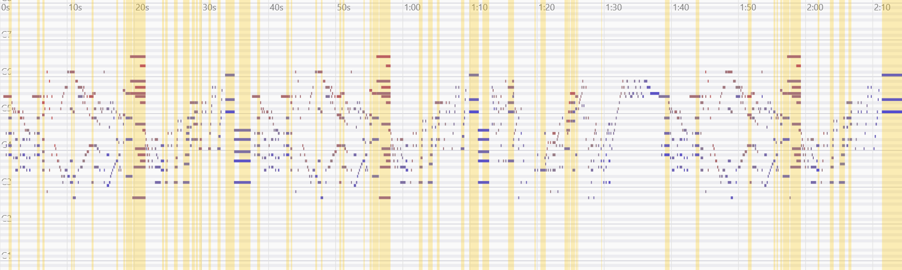
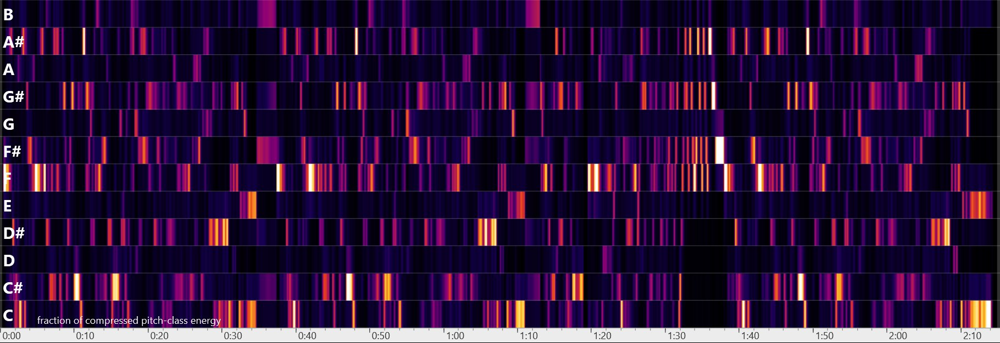
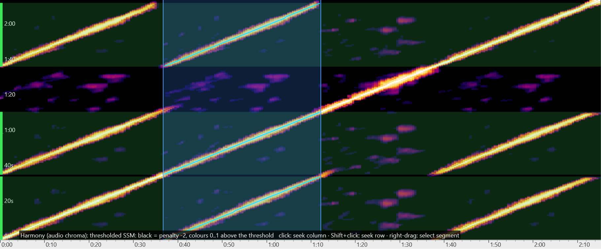
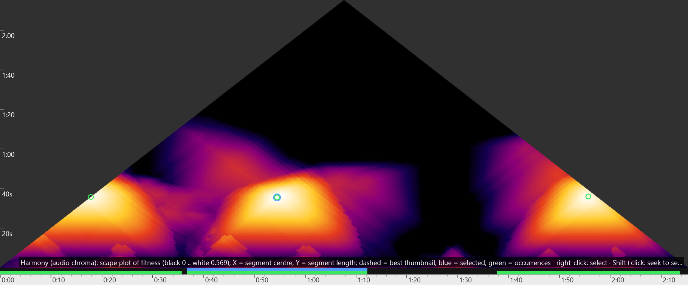
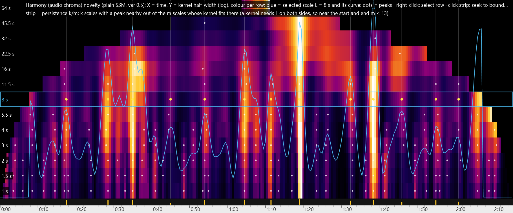
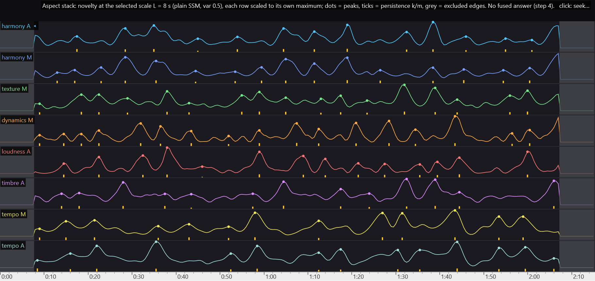
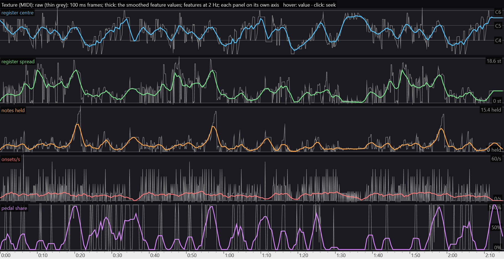
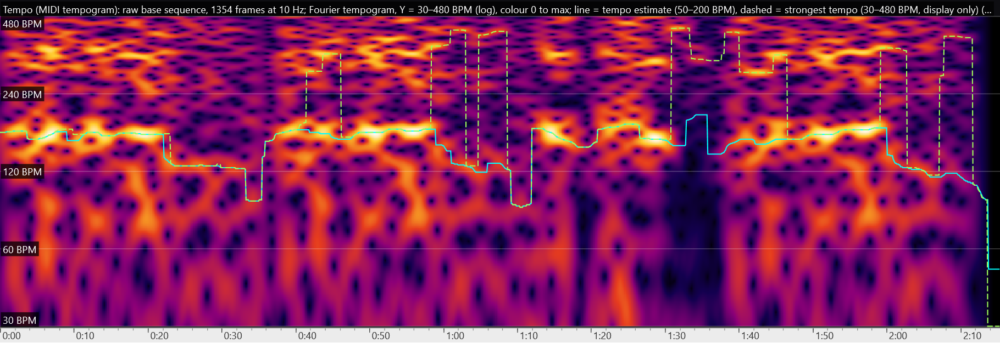

Tour 2: a generated piece
Generated piece 16, made by the model with no plan. Open project R2P2N16, select n2. The same questions; watch for what is different.
1. Piano roll
The rough shape?

1234- Loud high chords with pedal at 0:19 ...
- ... and at 0:56 ...
- ... and at 1:57.
- Soft, long, low chords close the first statement.
You can see it before any analysis. The pattern of the notes is repeated, not just the mood.

1234- F at the start ...
- ... at 0:37 ...
- ... and at 1:38.
- F also at 1:19, inside the new stretch.
2. Self-similarity matrix (M)
What comes back?

12345- Blue band: the thumbnail, 0:36.8 to 1:12.3.
- Cyan, lowest: it matches 0:00 to 0:36.
- Cyan, highest: it matches 1:38 to 2:14.
- Black and blotchy, between the green bands: the stretch from 1:12 to 1:38, which is new.
- The thin black gap: the seam between the first two statements.
Three statements of one section, with one stretch of other music: A A B A. Compare with September: there the stripe changes width along the way; here the stripes are straight and even.
3. Scape plot (T)
How strong is it?

1234- Best, selected and one occurrence, all on one spot.
- First statement.
- Third statement.
- Nothing longer returns.
Fitness 0.569 is higher than September's 0.410. That does not make it a better piece. It repeats a larger share of itself, more exactly.
4. Novelty (N)
Where are the seams?

123456- 0:35: the end of the first statement.
- 0:28.5 ...
- ... and 1:04.5: the same place in the second statement, 36 s later, and nearly the same height (0.756 and 0.755).
- 1:19, inside the new stretch: F takes over (see the chromagram above).
- 1:38.5, the strongest: the section returns.
- The curve climbs at 2:06 and is cut off by the excluded edge. It is the third twin of 0:28.5, too close to the end to count.
When a section is repeated, its novelty curve is repeated too. Look for twins: equal peaks at equal distances. They are a sign of literal repetition.
5. Aspect stack (K)
Seams of what?

123- 1:32: texture and timbre peak, harmony a little.
- 1:38.5: harmony, with texture and timbre close by; dynamics come later, at 1:43.
- 0:35: harmony. Dynamics and loudness do not stand out.
In September one moment (1:09) moved four rows to their maximum. Here the rows' highest peaks are spread over more than a minute, from 0:28 to 1:44. This is one piece against one piece, so take it as an observation to test on others, not as a rule.
6. Raw aspect (R)
Is it a copy or a variation?


A composer's return is usually altered somewhere. These are nearly identical. A check on the notes themselves found 87 to 92 percent of the notes of one statement in another (same pitch, within 80 ms, 5 seconds at a time). The model restated what was still in its context.
To an ear this is a da capo, a perfectly good form. The views tell you how it was made; they do not tell you whether it works.
Continue with a short third tour: what it looks like when only a motif comes back.
Read more
- Müller, Jiang and Grosche, A robust fitness measure for capturing repetitions in music recordings, IEEE TASLP 2013
- D. Huron, Sweet Anticipation, MIT Press 2006, and L. Meyer, Emotion and Meaning in Music, 1956: expectation and surprise